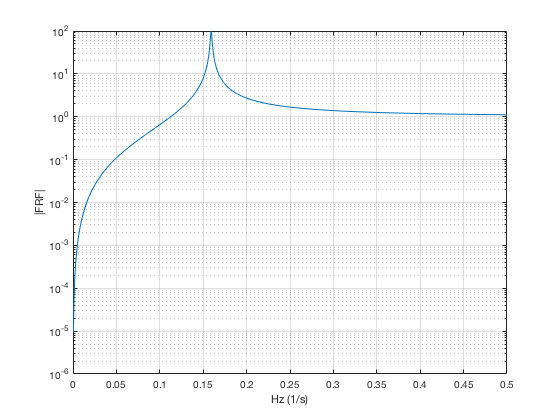
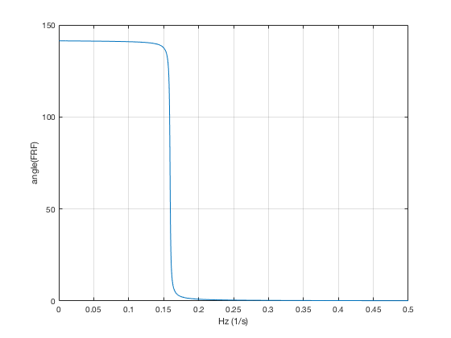
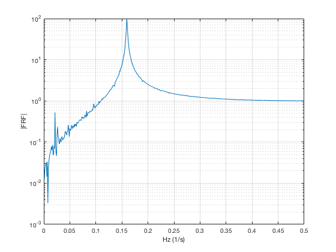
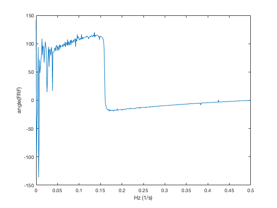

Contents
Part 1
Using the derivation given in the book, we will derive the Frequency Response Functions for particular solution cos(wt).
clear f = linspace(2,500,1024); g = linspace(0,pi,1024); Re_y = (1-g.^-2)./(g.^-4 - 1.9999*g.^-2 + 1); Im_y = 0.01*(g.^-1)./(g.^-4 - 1.9999*g.^-2 + 1); Mag_y = sqrt(Re_y.^2+Im_y.^2); C_i = Mag_y; phase = atan2(Im_y,Re_y); frf1 = Re_y + 1i*Im_y; semilogy(g./(2*pi),C_i); xlabel('Hz (1/s)') ylabel('|FRF|') grid on; figure; plot(g./(2*pi),phase*45); xlabel('Hz (1/s)') ylabel('angle(FRF)') grid on; 
Part 2
We will obtain the same FRF now by system identification using a set of input-output data. In particular, we will produce the same plots as above.
A_c = [
0 1
-1 -0.01
];
B_c = [0;1];
C_c = [-1 -0.01];
D_c = 1;
dt = 1; % seconds
syst = c2d(ss(A_c,B_c,C_c,D_c),dt);
A = syst.A;
B = syst.B;
C = syst.C;
D = syst.D;
n = 1024;
inp = randn(1,n);
inp(n/2:end) = 0;
%close ALL
figure
plot(inp)
x0 = [0.5;0.5];
[Y, X] = dlsim(A,B,C,D,inp,x0);
fft_o = fft2(Y');
fft_i = fft2(inp);
frf = fft_o./fft_i;
frf = frf(1:end/2);
semilogy(linspace(0,length(frf)/n,length(frf)),abs(frf));
xlabel('Hz (1/s)')
ylabel('|FRF|')
grid on
figure
plot(linspace(0,length(frf)/n,length(frf)),angle(frf)*45)
xlabel('Hz (1/s)')
ylabel('angle(FRF)')
 